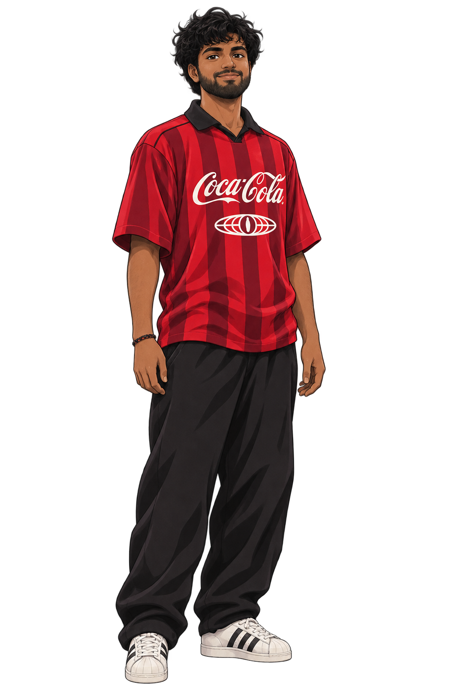
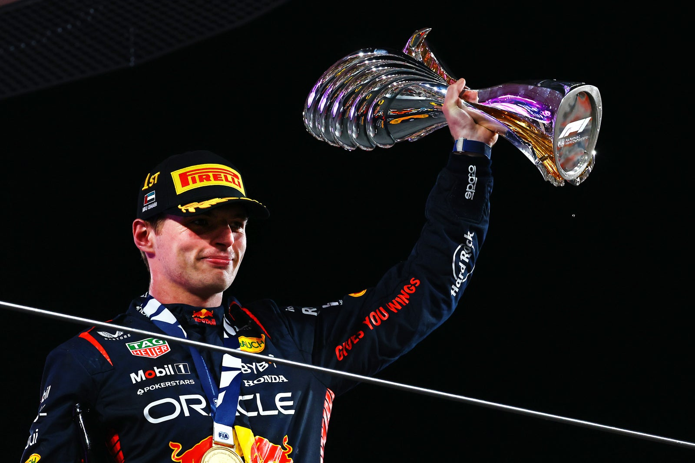
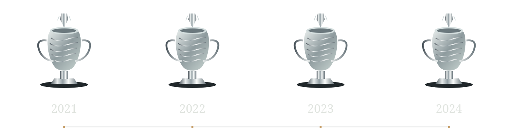
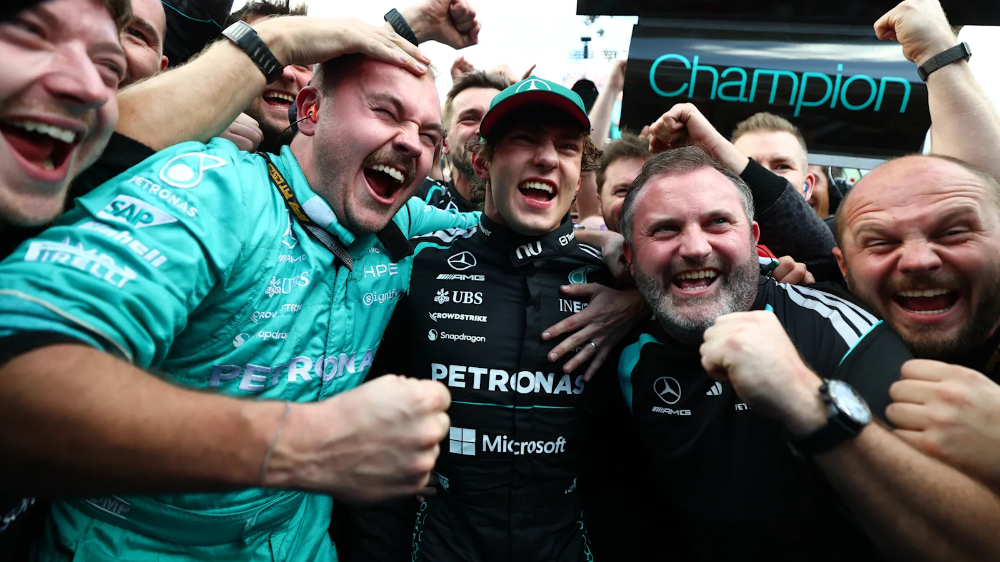
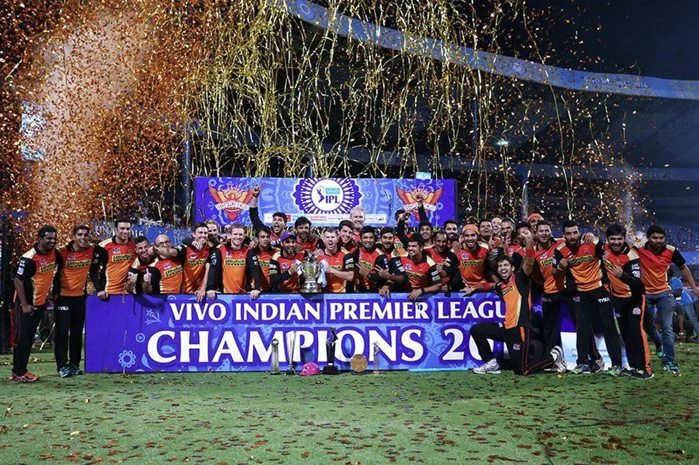
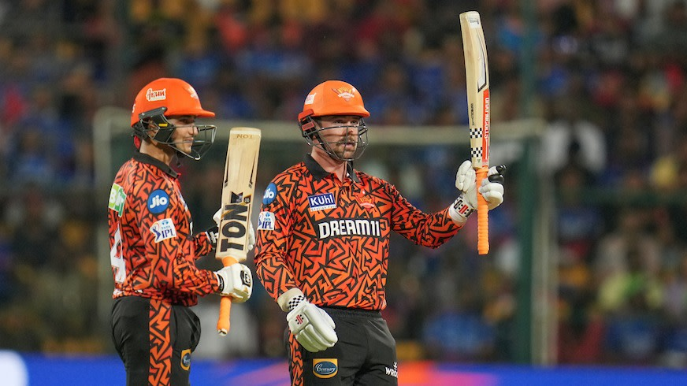

THE FOUNDATIONBachelor’s degree
Bachelor’s degree
Computer Science
The beginning of my formal education in computer science: learning the fundamentals and finding a way to turn curiosity into something I could build.
A PERSONAL JOURNAL
I’m Yasin. From Warangal to California, I’m collecting experiences, asking better questions, and learning what makes a life feel like my own.

BEHIND THE NAME
I’m Yasin Ali Syed. I grew up in Warangal, India, and life brought me to California.
In 2024, I moved to the United States to study computer science at California State University Channel Islands. It was the beginning of a different chapter: a new place, a different rhythm, and a lot to figure out along the way.
There’s a part of me that likes understanding how things work. Another part wants to take the long way, notice a good view, and have a conversation that goes somewhere.
This is a place to keep both. The things I’m learning, the places I’ve been, and the small moments that deserve more than a forgotten space in my camera roll.
India is where my story starts. Wherever life takes me, Warangal will always be part of the answer to “Where are you from?”
A move in July 2024. A master’s in computer science at CSU Channel Islands. A life taking shape a little at a time, far from where it began.
I don’t want this page to read like a finished story. I’d rather leave room for changing my mind, trying something new, and becoming someone I haven’t met yet.
SOME OF THE FOUNDATION
A few formal milestones.
The learning carries on
outside the classroom.
The beginning of my formal education in computer science: learning the fundamentals and finding a way to turn curiosity into something I could build.
A new chapter in California, a deeper understanding of the subject, and a degree completed at California State University Channel Islands.
THINGS THAT PULL ME IN
I think the things we make time for
say something about who we are.
These are a few of mine.
A Red Bull supporter, always interested in what happens between the obvious highlights: the strategy, the decisions under pressure, and the tiny margins that change a race.
Fast cars. Long conversations about them.Photographs give an ordinary moment somewhere to stay. I want a place for the views, details, and passing scenes that made me stop for a second.
Open the photo journalI’m making more room for reading and for questions that don’t have an immediate answer. Sometimes a good idea stays with you longer than the book it came from.
A shelf for ideas I’m still sitting with.California has become a place to explore: Malibu, San Francisco, Fremont, and the roads between them. A different setting can be a good reason to look up and pay attention.
Visit the memory timelineComputer science gave me a way to ask “How does this actually work?” I’m interested in the systems behind everyday things, from a useful website to the infrastructure that keeps it running.
Learning by taking a closer look.SPORTS & ALLEGIANCES
The teams, the people, the moments.
A small corner for being a fan
and taking something from it.

The standard I keep coming back to:
show up, put in the work, do it again.
FOUR CONSECUTIVE WORLD TITLES
2021 — 2024
Four seasons. Four championships. A lot of unseen work between them.
Championship history · Red Bull Racing
2026 WORLD CHAMPIONRESPECT, WHATEVER THE COLOURS
Kimi Antonelli. World Champion in 2026. A first title, secured in Mexico City, and a moment worth celebrating even from the Red Bull side of the room.
What I take from it: keep preparing. You don’t have to have the whole story figured out to be ready for your next chapter.
The championship moment · Formula 1SUNRISERS HYDERABAD
Some allegiances feel a little closer to home.
This one always will.

SRH 208/7. RCB 200/7. Champions by eight runs.
2024 · A SEASON WITH THE VOLUME UP
The 2024 side reached the final and left behind a season of extraordinary batting. These are a few of the innings I want this page to remember.

Photography: Getty Images / The Independent, Formula 1, and IPL. The 2016 final · SRH’s milestones
CALIFORNIA, CONNECTED
LAX to Fremont, with a few
detours worth keeping.
Pick a place. Follow the thread.
The arrival point. Where the California chapter begins.
A FEW THINGS ON MY SHELF
A thriller, a better conversation,
a different relationship with what matters.
Click a cover to open it.
THE WAY I SEE IT
Places, passing light, ordinary days.
A photo journal for the moments
I want to come back to.
A preview collection with sample photography. Add your own photographs to make this space yours.
Add your first photograph, give it a title, and write a little about why it matters.
THE THINGS THAT STAY
Life doesn’t arrange itself into neat milestones. But some moments give a chapter its shape.
Choose a chapter to read a little more.
In July 2024, I moved from India to the United States. Warangal was the place I knew; California was the place I was about to get to know. That move is where this part of my story begins.
Some chapters begin with a departure.I completed my master’s in computer science at CSU Channel Islands in 2026. University was the reason for the move, and it gave those first years in California a shape and a direction.
A degree completed. A curiosity to keep.Malibu, San Francisco, Fremont, Camarillo. A few names on a map that are also part of my life here. This chapter has room for the photographs and stories from those places.
More than destinations. Places in a story.I’m in Camarillo now. There are things I know about the life I want, and plenty I’m still working out. I want this space to grow with me, a photograph, a thought, and a new memory at a time.
An unfinished page is still a beginning.ROOM FOR ANOTHER POINT OF VIEW
Twelve takes. Two choices.
The Skip button has opinions, too.
Your name can sit this one out.
Opening the beef…
THE OPEN FLOOR
Leave your own take, a suggestion, or a little friendly fire.
Opening the notebook…
No name or email is asked for or stored with a note. Notes appear here for visitors to read. A roast can be sharp and still be kind.
A SMALL UPDATE FROM THIS CHAPTER
PERSONAL NOTES · NOVEMBER 2026Making a little more room for a life I want to remember.
Learning, reading more, exploring California, and giving my photographs and thoughts somewhere to live. This website is a small start.
Thanks for spending
a little of your time here.